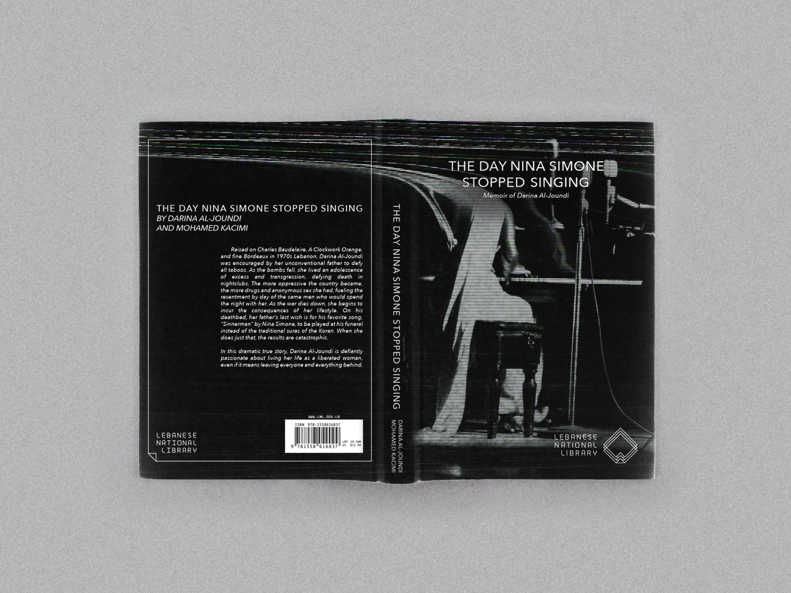

Basée sur une photographie scannée de Nina Simone sur scène en 1964, ce projet s’inspire du livre « The Day Nina Simone Stopped Singing » (Le jour où Nina Simone a cessé de chanter) de Darina al-Joundi.
Dans ce livre, l'actrice Darina al-Joundi se souvient de ses expériences de jeunesse non conventionnelle à Beyrouth, ville déchirée par la guerre. Elle avait sept ans lorsque la guerre a commencé au Liban en 1975.
« Affamée de tout, de sexe, de drogue, d'alcool », elle a vécu une adolescence d'excès et de transgression. Son père l'a encouragée à être indépendante, insistant que son enfant ne soit pas retenu par les limites des traditions imposées aux femmes du Moyen-Orient. Sur son lit de mort, le dernier souhait de son père est que sa chanson préférée, « Sinnerman » de Nina Simone, soit jouée à ses funérailles au lieu des sourates traditionnelles du Coran. En exauçant son vœu, elle s'est heurtée aux autres membres de la famille, et ils l’ont fait interner de force.
Vue du collage numérique.
Vue de la couverture de The Day Nina Simone Stopped Singing.
Assemblage des images qui ont inspirés la production du collage.